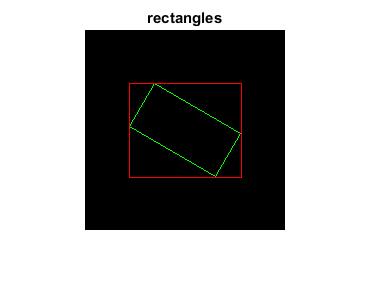

Rotated Rectangle
The sample below demonstrates how to use cv.RotatedRect
A rotated rectangle is specified by the center point (mass center), length of each side, and the rotation angle in degrees.
img = zeros([200 200 3], 'uint8'); rRect = struct('center',[100 100], 'size',[100 50], 'angle',30);
Draw four connected vertices representing the rotated rectangle
vertices = cv.RotatedRect.points(rRect); for i=1:4 img = cv.line(img, vertices(i,:), vertices(mod(i,4)+1,:), ... 'Color',[0 255 0]); end
Draw bounding rectangle containing the rotated rectangle
brect = cv.RotatedRect.boundingRect(rRect);
img = cv.rectangle(img, brect, 'Color',[255 0 0]);Show the result
imshow(img); title('rectangles')